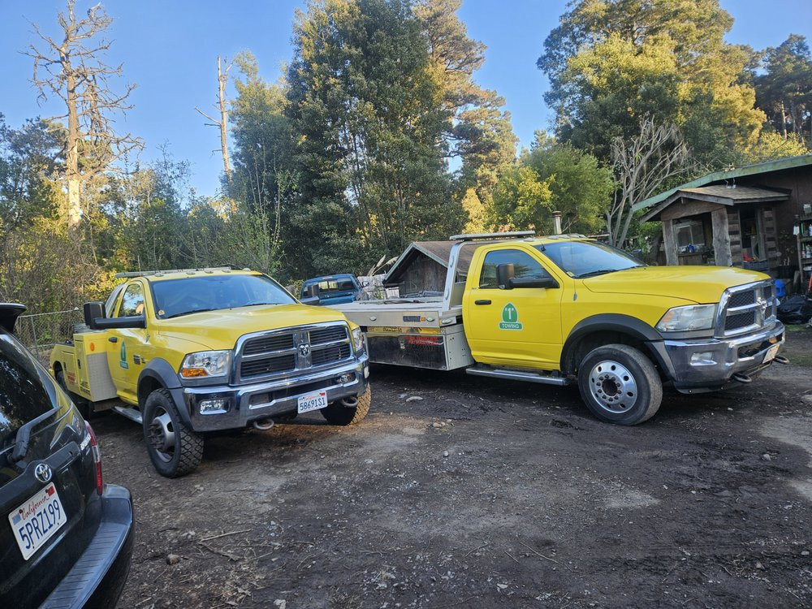

Independent website concepts · Aansh Bali
Built for the
next call.
Two sample websites for local towing businesses. Each concept brings the essentials into focus: the services, the location, the people, and a clear way to get in touch.

MODESTO, CALIFORNIA
Arrahien Towing Service
Explore the concept ↗
FORT BRAGG, CALIFORNIA
SR1 Towing
Explore the concept ↗These are unofficial concepts for review. View my work and résumé ↗ · Photo and information sources